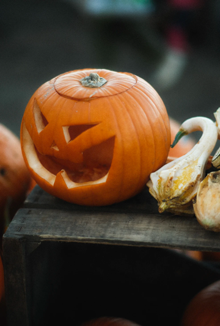

How to Carve a Pumpkin
Halloween is just around the corner. Everyone’s setting up their old decorations, and streets are painted with bright orange jack-o-lanterns. In this article, you will learn how to carve your very own pumpkin into a spooky jack-o-lantern.
Here are the steps to carve your pumpkin:
Pre-Carving Steps
- It’s crucial to pick a good pumpkin to compliment the type of face you would like to carve onto your pumpkin. When you’re at the supermarket, choose a large pumpkin with lots of surface area for your imagination to run wild.
- While at the store, you may pick up a pumpkin carving set. A simple $5 kit will suffice.
- Wash your pumpkin to remove any excess pathogens and wipe it down with a paper towel when you get home.
- Think of a face you like and draw the picture of your design onto the pumpkin with a black marker, or trace a stencil.
- Use the given knife in the pumpkin carving kit to cut out and put aside a circular lid from the top of the pumpkin and use a large spoon (or your hands) to scoop out the flesh.

Jack-o-Lantern (Mathias P.R. Reding) - https://unsplash.com/photos/L4CCJXGSK8I
Carving Steps
- Carve out each of your jack-o-lantern components, one at a time, and pop the bits out with your finger.
- Remember to carve steadily to avoid messing up your design and prevent any injuries.
Finishing Up
- To be safe, place an electric light in the centre of the base of your pumpkin as a flame may catch the pumpkin on fire which can be hazardous.
- Put the lid back on top of the pumpkin to encapsulate the light.
- Place the fully carved jack-o-lantern in your desired spot to compliment all your other Halloween decorations.
Final Tips
- To extend the lifespan of your pumpkin, keep it out of direct sunlight to slow decomposition.
- Pick a smooth and large pumpkin to extend your canvas space when selecting a pumpkin.
Congratulations! You’ve successfully carved your very own jack-o-lantern to add to your Halloween decoration gallery. Have a spooky Halloween!